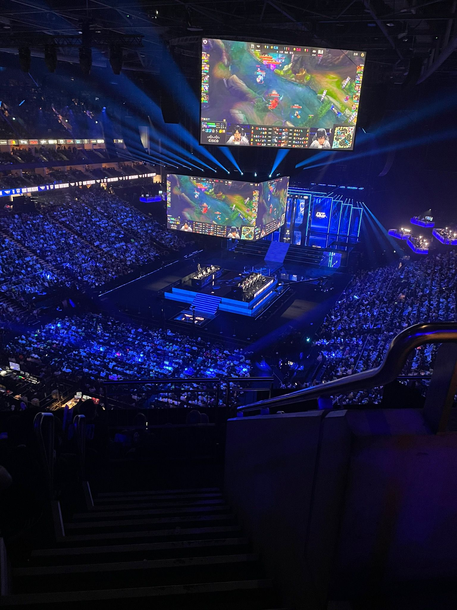
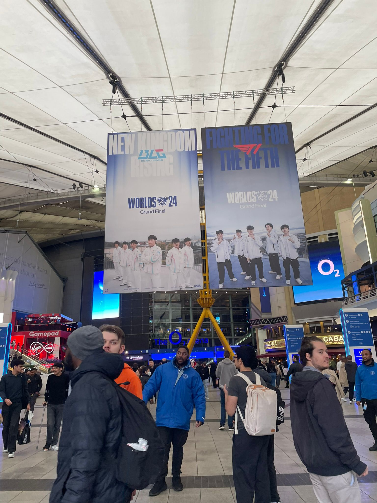
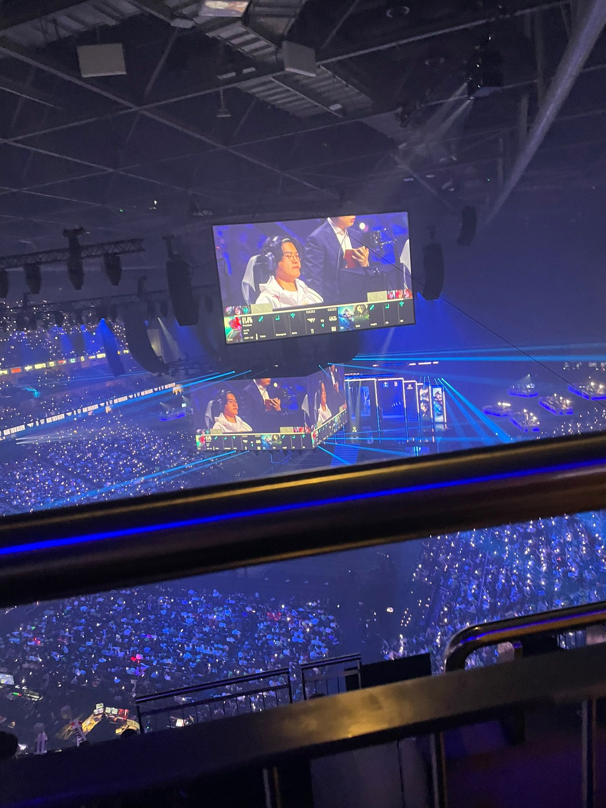
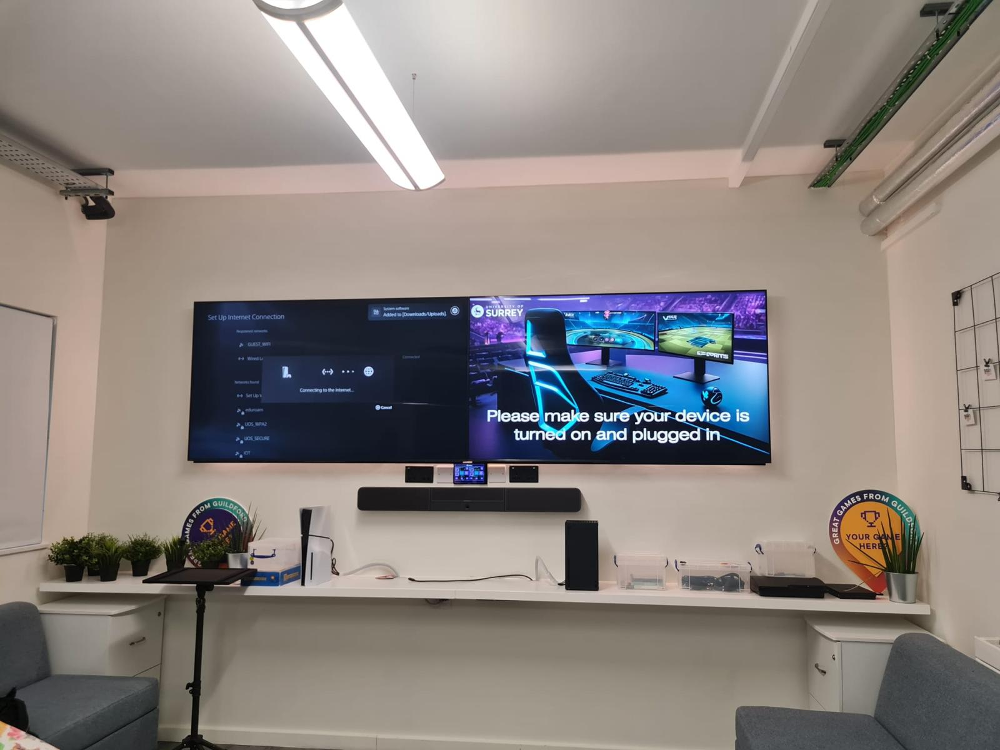

Postgraduate researcher combining psychology, play, and mixed-methods UX research to help development teams build better player experiences. Based in Guildford and London, open to hybrid and remote.
I have had two obsessions my whole life: gaming and psychology.
Most people think of psychology as therapy, understanding what drives clinical behaviour. I'm more interested in the everyday stuff nobody thinks to question. Why does removing a feature players said they hated make them angrier than having it? Why does a game that should feel unfair become the thing people love most about it? Why does the anticipation of a reward activate the same response as the reward itself, but feel completely different?
The answers are almost never obvious. Most of human behaviour runs on autopilot. We're architects of our own habits without realising it. My interest is in making the invisible, visible: finding the patterns in what people do, explaining the gap between what they say and what they mean, and giving teams something they can actually act on.
That's what drew me to games research specifically. It's one of the few fields where you can study real, high-stakes emotional behaviour, frustration, trust, flow, social dynamics, in a controlled environment. The stakes feel low to the participant. The insight is anything but.
That interest has taken me further than the lab. I've attended major esports events and experienced how gaming communities behave at scale. That shapes how I think about player psychology, not just as data points, but as something I've felt firsthand.



I attended the LoL Worlds 2024 Grand Final at The O2 and spent a fair amount of it watching the crowd rather than the stage. Being more interested in the people experiencing something than the thing itself is, roughly, how I ended up in user research.
My background is Psychology at the University of Surrey: BSc first, then an MSc in Psychology, Game Design and Digital Innovation. The research methods grounding matters to me as much as the subject. I want to know exactly what I am doing when I put findings in front of a team.
My placement at 22cans on Masters of Albion gave me something most researchers at my level have not had: the full research lifecycle inside a live studio, with real stakeholders waiting on the output. Ethics, recruitment, facilitation, analysis, presentation, and a team that had to act on what I found.
My specialist interests sit at the intersection of player psychology, VR interaction design, and trust in immersive systems. I care about translating findings into something a development team can actually do something with.
Based in Guildford and London. Open to onsite, hybrid, or fully remote.
Methods, tools, and analytical approaches I bring to user research projects.
A selection of research projects spanning games, VR, and behavioural psychology.
A full user research engagement embedded within an active studio, covering the complete research lifecycle from ethics approval through stakeholder delivery. I managed participant recruitment, ran live facilitated playtest sessions, conducted and transcribed post-play interviews, applied thematic analysis, and delivered a prioritised findings report to the development team.
Working in a live studio environment meant navigating real constraints: NDA protocols, stakeholder expectations, and production timelines alongside the research itself.

Designed and built a VR environment in Unreal Engine simulating alcohol-like visual impairment to evaluate its effects on cognitive task performance. The prototype introduced measurable perceptual distortions while participants completed structured in-world tasks, with cognitive performance and behavioural responses recorded throughout.
Delivered as a full academic presentation covering design rationale, methodology, participant response analysis, and implications for accessibility and safety simulation.
Investigated motor learning differences in children with Developmental Coordination Disorder using a gamified visuomotor rotation task, presented as an alien-feeding game for participants aged 9 to 11. The study compared implicit and explicit learning strategies across DCD and typically-developing groups.
Designing research instruments for a child population required careful attention to ethics, age-appropriate language, and engagement, skills directly transferable to game UX research with diverse player populations.
Examining how driving style and explanatory behaviour affect user trust in autonomous systems, using a custom VR environment and a mixed-methods design combining quantitative psychometrics with qualitative self-report analysis.
Case study available on completion, 2026
Critical design analysis of AAA titles through a UX and player psychology lens.
A psychological critique separating CS2's two design systems: a skill-based in-game economy built on prospect theory and cognitive load, and a monetisation economy built on variable reinforcement, the near-miss effect, and classical conditioning. Examines the ethical implications of gambling mechanics in a free-to-access platform, including the CSGOLotto scandal and the gap between regulatory response and psychological evidence.
"The skin economy isn't cosmetic. It's a second game built on variable reinforcement, running parallel to the first."
A three-part critique examining how League of Legends sustains 150 million players through emergent complexity and staged mastery; how the ranked system satisfies self-determination theory needs while weaponising loss aversion and the goal gradient effect; and how Hextech monetisation deploys variable ratio reinforcement and engineered FOMO against a predominantly adolescent player base. Argues that toxicity is a structural output of anonymous high-stakes design, not a player character problem, and that Riot built the conditions for it.
"Toxicity isn't a player character problem. Riot built the conditions for it."
Selected for competitive games industry programmes and academic distinctions.
Selected applicant for the games industry mentorship programme connecting emerging talent with senior industry professionals.
2025 / 26Fully developed doctoral research proposal in games user research and player psychology. Available on request.
2026Active member, game jam participant, and contributor to AAA title design critique sessions.
Jan 2024 – Jan 2026Open to junior user research and UX research roles in games and AI. Onsite, hybrid, or fully remote. Guildford, London, and across the UK.